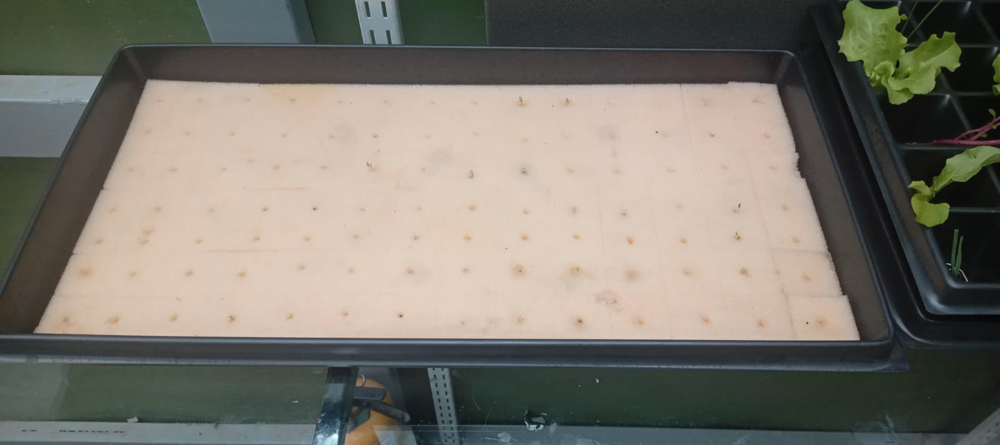
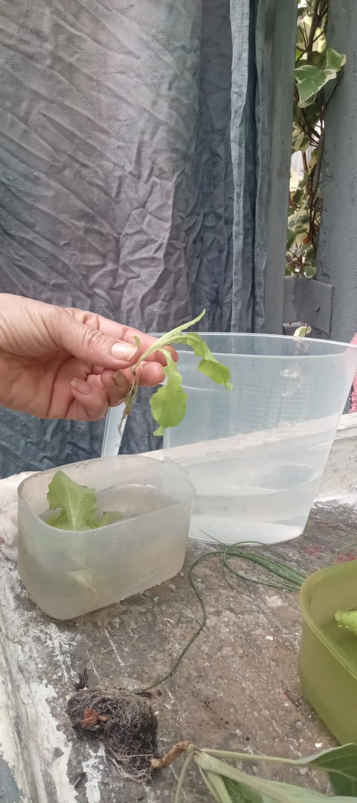
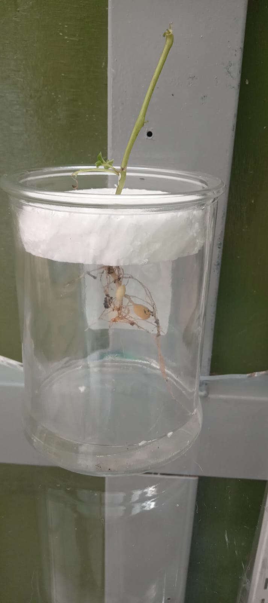

Los cultivos hidropónicos son una técnica avanzada de agricultura que permite el crecimiento de plantas sin necesidad de suelo. En este método, las plantas crecen en soluciones nutritivas acuosas que proporcionan todos los elementos esenciales para su desarrollo. La hidroponía ofrece múltiples ventajas, como un uso más eficiente del agua, un control preciso de nutrientes y la posibilidad de cultivar en espacios reducidos, como áreas urbanas o interiores. Este sistema también reduce la necesidad de pesticidas y puede incrementar la velocidad de crecimiento de las plantas, promoviendo una agricultura más sostenible y productiva.
Los cultivos hidropónicos y aeropónicos representan métodos innovadores de agricultura sin suelo. En la hidroponía, las plantas crecen en soluciones nutritivas acuosas, lo que permite un uso eficiente del agua y un control preciso de los nutrientes. Este método es ideal para espacios reducidos y reduce la exposición a plagas y enfermedades. Por otro lado, en la aeroponía, las raíces de las plantas están suspendidas en el aire y se rocían con una fina niebla de solución nutritiva. Este enfoque maximiza la oxigenación de las raíces y puede acelerar el crecimiento de las plantas, además de ofrecer un gran control sobre el ambiente de cultivo. Ambos métodos son sostenibles y adecuados para la producción de alimentos frescos en entornos urbanos y áreas con recursos limitados, promoviendo una agricultura más eficiente y respetuosa con el medio ambiente.
La tecnología en cultivos hidropónicos y aeropónicos ha revolucionado la agricultura moderna, ofreciendo soluciones avanzadas para el cultivo de plantas en ambientes controlados. En la hidroponía, se utilizan sistemas de cultivo en los que las plantas son cultivadas en una solución nutritiva sin suelo. Esta técnica emplea tecnología precisa para mezclar y suministrar nutrientes, manteniendo un entorno controlado que optimiza el crecimiento de las plantas. Los sistemas hidropónicos comunes incluyen la Técnica de Película Nutritiva (NFT), la Cultura en Agua Profunda (DWC), y los sistemas de flujo y reflujo (Ebb and Flow). Cada uno de estos sistemas utiliza sensores y controladores automatizados para ajustar parámetros críticos como el pH y la concentración de nutrientes, lo que permite una agricultura altamente eficiente y sostenible. Por otro lado, la aeroponía representa una tecnología aún más avanzada, donde las raíces de las plantas se mantienen en un entorno de aire y se rocían con una fina niebla nutritiva. Este método emplea nebulizadores y sistemas de control de ambiente que garantizan una distribución uniforme de nutrientes y oxígeno, maximizando la eficiencia del crecimiento. La aeroponía permite un control preciso sobre variables como la humedad y la temperatura, facilitando un desarrollo óptimo de las plantas en un espacio reducido. Ambos métodos incorporan tecnologías emergentes como sensores de humedad, controladores de ambiente y sistemas de automatización que optimizan los procesos de cultivo, reducen el uso de recursos y minimizan el impacto ambiental. Estas tecnologías están impulsando una transformación en la agricultura al permitir la producción de alimentos frescos en entornos urbanos y condiciones adversas, promoviendo prácticas agrícolas más sostenibles y resilientes.
Los cultivos hidropónicos y aeropónicos destacan por su contribución a la sostenibilidad ambiental. Estos métodos ofrecen varias ventajas clave: Uso Eficiente del Agua: Utilizan hasta un 90% menos agua en comparación con la agricultura tradicional, gracias a sistemas de recirculación y niebla fina. Reducción del Uso de Suelo: Permiten el cultivo en espacios reducidos y áreas urbanas, reduciendo la necesidad de deforestar y preservar terrenos naturales. Menor Uso de Pesticidas: Al mantener un entorno controlado, disminuyen la necesidad de pesticidas químicos, promoviendo alimentos más limpios y saludables. Reducción de Residuos: Generan menos residuos agrícolas y optimizan el uso de nutrientes, minimizando el impacto ambiental. Producción Local: Facilitan el cultivo de alimentos frescos en áreas urbanas, reduciendo las emisiones de gases de efecto invernadero asociadas con el transporte. Estos métodos de cultivo no solo mejoran la eficiencia en la producción de alimentos, sino que también promueven prácticas agrícolas que respetan y conservan el medio ambiente.
Para más información sobre nuestros cultivos y tecnologías, contáctanos en info@researckoy.com o al +57 3136481715 Estamos aquí para ayudarte con tus consultas.
 Contáctanos
Contáctanos